Chapter 4 자료의 시각화와 분포
이 장에서는 데이터를 눈으로 이해할 수 있도록 시각화 하는 방법과, 데이터가 어떤 모양으로 퍼져 있는지를 나타내는 분포(distribution) 의 개념을 배웁니다. 나아가 분포와 밀접하게 연결된 확률(probability) 의 기초까지 살펴봅니다.
분석에는 국민체력100 사업의 국민 체력측정 데이터 를 사용합니다. R은 통계와 시각화를 위해 설계된 언어이므로, 이러한 작업 대부분을 base R 과 dplyr, ggplot2 만으로 간결하게 수행할 수 있습니다.
library(dplyr)
library(readr)
library(ggplot2)
url <- "https://raw.githubusercontent.com/minstat/edu/main/physical_test_2018_data.csv"
physical <- read_csv(url)## Rows: 1874 Columns: 18
## ── Column specification ──────────────────────────────────────────────────────────
## Delimiter: ","
## chr (4): CENTER_NM, CERT_GBN, AGE_GBN, TEST_GEN
## dbl (14): TEST_AGE, ITEM_F001, ITEM_F002, ITEM_F003, ITEM_F004, ITEM_F005, ITE...
##
## ℹ Use `spec()` to retrieve the full column specification for this data.
## ℹ Specify the column types or set `show_col_types = FALSE` to quiet this message.## Rows: 1,874
## Columns: 18
## $ CENTER_NM <chr> "연제", "연제", "세종", "연제", "사하", "KSPO광주", "영암", "청주", "구미", "춘천"…
## $ CERT_GBN <chr> "참가증", "참가증", "참가증", "2등급", "참가증", "참가증", "참가증", "참가증", "참가증",…
## $ AGE_GBN <chr> "성인", "성인", "성인", "성인", "성인", "성인", "유소년", "성인", "청소년", "성인", …
## $ TEST_AGE <dbl> 33, 48, 22, 29, 31, 23, 11, 24, 18, 41, 35, 32, 37, 16, 13, 25…
## $ TEST_GEN <chr> "M", "F", "M", "M", "F", "F", "M", "M", "M", "F", "F", "F", "F…
## $ ITEM_F001 <dbl> 159.2, 155.8, 175.2, 178.7, 160.1, 157.8, 165.5, 174.9, 181.0,…
## $ ITEM_F002 <dbl> 57.2, 52.9, 96.2, 79.4, 50.2, 60.1, 60.3, 74.5, 71.3, 72.7, 66…
## $ ITEM_F003 <dbl> 30.3, 29.0, 32.8, 17.9, 31.2, 42.4, NA, 35.7, 19.1, 38.9, 33.1…
## $ ITEM_F004 <dbl> 77.0, 70.0, 109.4, 80.0, NA, 72.0, 79.0, 96.1, NA, 96.8, 84.0,…
## $ ITEM_F005 <dbl> 60, 80, 85, 84, 71, 63, 64, 77, 79, 80, 64, 67, 75, 67, 77, 66…
## $ ITEM_F006 <dbl> 101, 130, 141, 132, 115, 103, 114, 132, 117, 110, 104, 108, 10…
## $ ITEM_F007 <dbl> 23.3, 27.5, 48.9, 44.8, 13.4, 19.8, 18.6, 41.5, 45.5, 29.7, 29…
## $ ITEM_F008 <dbl> 30.6, 30.7, 52.3, 45.9, 16.8, 22.4, 18.7, 46.5, 41.5, 29.9, 30…
## $ ITEM_F012 <dbl> -6.2, 8.8, -2.8, 10.4, 15.9, 24.1, 9.5, 6.7, 6.9, 7.5, 24.4, 2…
## $ ITEM_F018 <dbl> 22.6, 21.8, 31.3, 24.9, 19.6, 24.1, 22.0, 24.4, 21.8, 28.2, 23…
## $ ITEM_F019 <dbl> 27, 18, 40, 48, 27, 4, NA, 30, NA, 15, 20, 15, 11, NA, NA, 35,…
## $ ITEM_F022 <dbl> 186, 149, 212, 230, 133, NA, 122, 204, NA, 135, 142, 156, 114,…
## $ ITEM_F028 <dbl> 53.5, 58.0, 54.4, 57.8, 33.5, 37.3, 31.0, 62.4, 63.8, 41.1, 45…데이터에는 성별(TEST_GEN), 연령대(AGE_GBN), 나이(TEST_AGE), 그리고 여러 체력·신체 측정 항목이 코드 형태(ITEM_F001, ITEM_F002, …)로 들어 있습니다. 이 장에서 주로 사용하는 두 변수는 다음과 같습니다.
ITEM_F001: 신장(키, cm)ITEM_F002: 몸무게(kg)
4.1 범주형 자료의 시각화
범주형 변수(categorical variable) 는 성별, 연령대처럼 정해진 몇 개의 값(범주) 중 하나를 가지는 변수입니다. 범주형 자료를 요약하는 가장 기본적인 방법은 각 범주가 몇 번 나타나는지를 세는 도수분포표(frequency table) 입니다.
4.1.1 도수분포표
R에서는 table() 또는 dplyr의 count() 를 사용합니다.
## # A tibble: 2 × 2
## TEST_GEN n
## <chr> <int>
## 1 F 793
## 2 M 10814.1.2 상대도수(비율)
도수분포표에서 각 항목이 전체에서 차지하는 비율(상대도수) 을 알고 싶을 때가 있습니다. R에서는 prop.table() 또는 dplyr에서 직접 계산합니다.
##
## F M
## 42.32 57.68## # A tibble: 2 × 3
## TEST_GEN n percent
## <chr> <int> <dbl>
## 1 F 793 42.3
## 2 M 1081 57.7이번에는 연령대별(AGE_GBN) 분포를 살펴봅니다.
## # A tibble: 4 × 2
## AGE_GBN n
## <chr> <int>
## 1 성인 1497
## 2 청소년 211
## 3 노인 143
## 4 유소년 234.1.3 원그래프
도수를 원의 넓이로 표현하는 원그래프(pie chart) 는 base R의 pie() 함수로 간단히 그릴 수 있습니다.
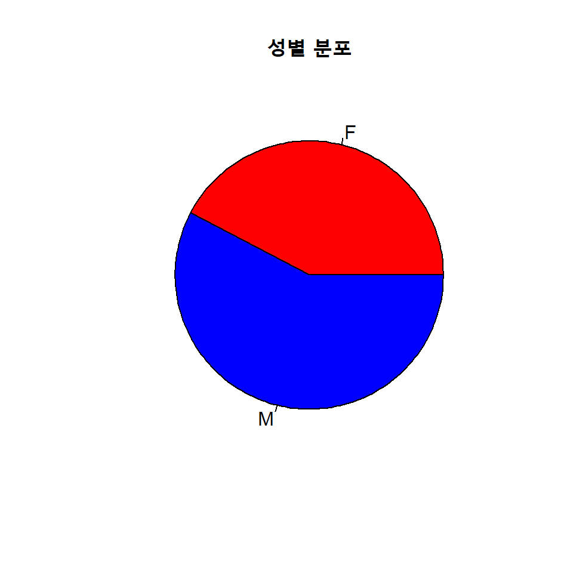
Figure 4.1: 성별 원그래프
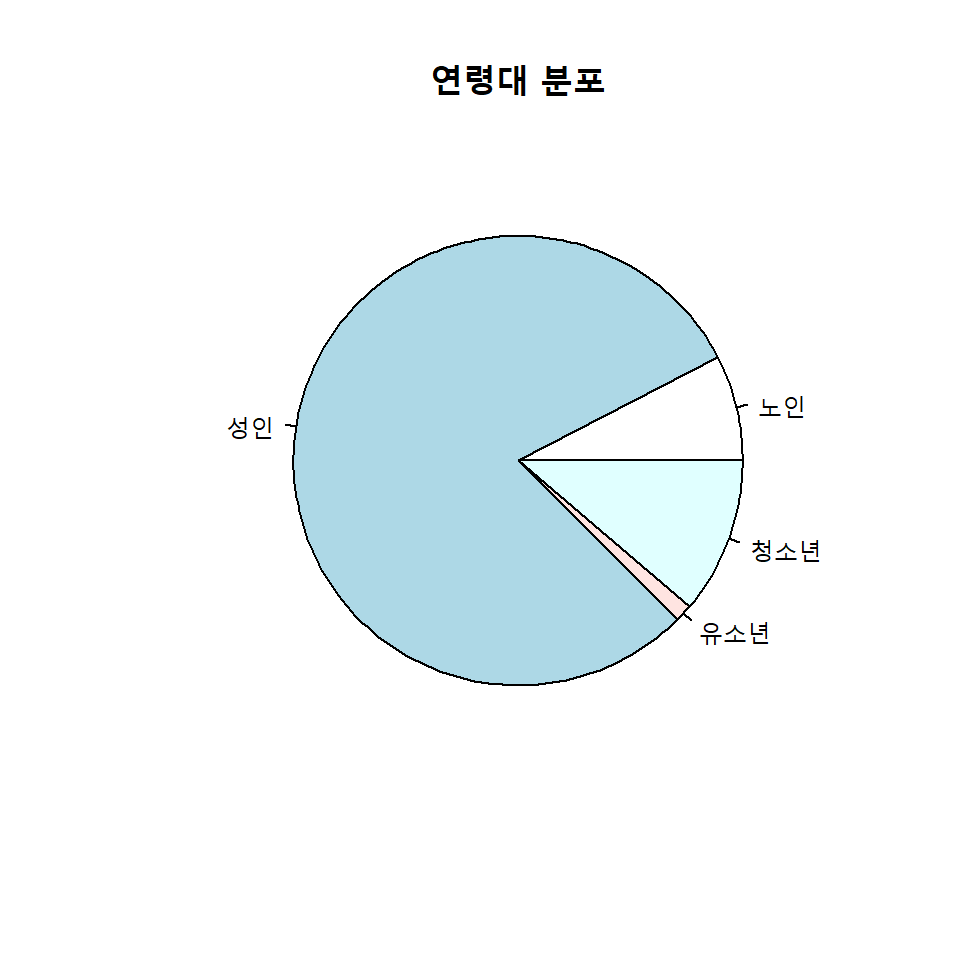
Figure 4.2: 연령대 원그래프
참고: 원그래프는 항목이 많거나 비율 차이가 작을 때는 오히려 비교가 어렵습니다. 이런 경우에는 다음에 배울 막대그래프 가 더 명확합니다.
4.1.4 막대그래프
도수의 크기를 막대의 길이로 표현하는 막대그래프(bar chart) 는 ggplot2 의 geom_bar() 로 그립니다. geom_bar() 는 원자료를 받아 자동으로 도수를 세어 막대를 그려 줍니다.
ggplot(physical, aes(x = AGE_GBN)) +
geom_bar(fill = "steelblue") +
labs(x = "연령대", y = "도수") +
theme_minimal()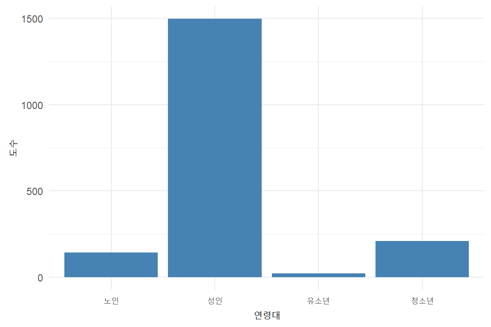
Figure 4.3: 연령대별 도수 막대그래프
도수 대신 비율(상대도수) 을 막대 높이로 나타내려면, 비율을 미리 계산한 뒤 geom_col() 로 그립니다.
physical %>%
count(AGE_GBN) %>%
mutate(prop = n / sum(n)) %>%
ggplot(aes(x = AGE_GBN, y = prop)) +
geom_col(fill = "steelblue") +
labs(x = "연령대", y = "비율") +
theme_minimal()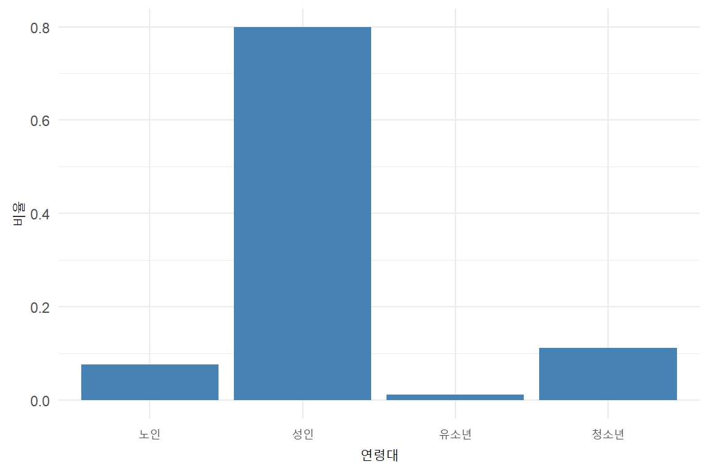
Figure 4.4: 연령대별 비율 막대그래프
geom_bar()는 원자료를 세어서 도수를 그리고,geom_col()은 이미 계산된 값 을 그대로 높이로 그린다는 차이가 있습니다.
4.1.5 분할표
두 개의 범주형 변수를 함께 고려하여 각 조합의 빈도를 정리한 표를 분할표(contingency table) 라고 합니다. 성별과 연령대의 조합별 분포를 살펴봅니다.
## # A tibble: 8 × 3
## TEST_GEN AGE_GBN n
## <chr> <chr> <int>
## 1 M 성인 865
## 2 F 성인 632
## 3 M 청소년 145
## 4 F 노인 88
## 5 F 청소년 66
## 6 M 노인 55
## 7 M 유소년 16
## 8 F 유소년 7분할표는 묶은 막대그래프 로 시각화하면 두 변수의 관계를 한눈에 볼 수 있습니다. ggplot2 에서 fill 에 두 번째 범주를 지정하고 position = "dodge" 를 주면 됩니다 (seaborn의 catplot(kind="count", hue=...) 에 대응).
ggplot(physical, aes(x = AGE_GBN, fill = TEST_GEN )) +
geom_bar(position = "dodge") +
labs(x = "연령대", y = "도수", fill = "성별") +
theme_minimal()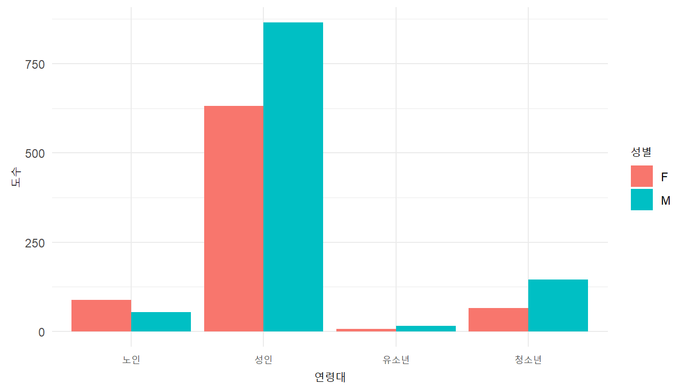
Figure 4.5: 연령대별·성별 묶은 막대그래프
4.2 연속형 자료의 시각화
연속형 변수(continuous variable) 는 키, 몸무게처럼 무한히 많은 값을 가질 수 있는 변수입니다. 개별 값의 도수를 세는 것은 의미가 없으므로(정확히 65.327kg인 사람의 수를 세는 것은 무의미), 다른 방식의 시각화가 필요합니다.
4.2.1 히스토그램
히스토그램(histogram) 은 전체 자료를 일정한 구간(bin)으로 나눈 뒤, 각 구간에 속하는 자료의 도수를 막대 높이로 표현합니다. 사람들이 가장 관심을 두는 변수인 몸무게(ITEM_F002)의 분포부터 살펴봅니다.
ggplot(physical, aes(x = ITEM_F002)) +
geom_histogram(fill = "steelblue", color = "white") +
labs(x = "몸무게 (kg)", y = "도수") +
theme_minimal()## `stat_bin()` using `bins = 30`. Pick better value `binwidth`.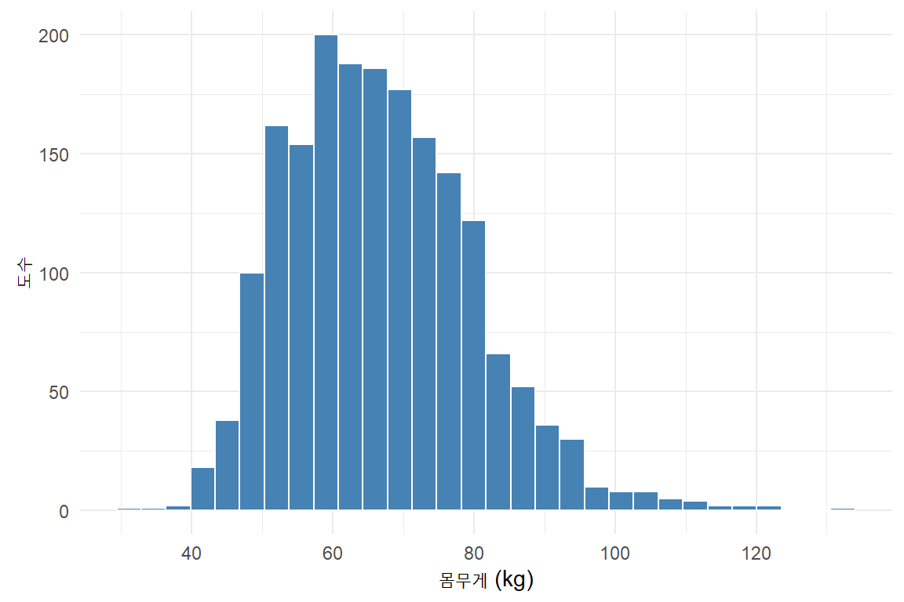
Figure 4.6: 몸무게 히스토그램
구간의 개수는 bins 옵션으로 조절합니다.
ggplot(physical, aes(x = ITEM_F002)) +
geom_histogram(bins = 50, fill = "steelblue", color = "white") +
labs(x = "몸무게 (kg)", y = "도수") +
theme_minimal()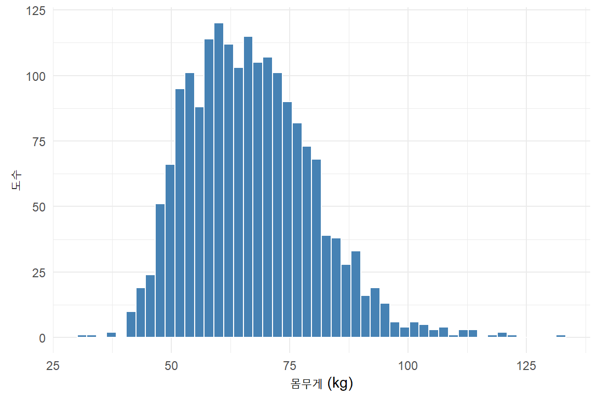
Figure 4.7: 몸무게 히스토그램 (bins = 50)
이번에는 신장(ITEM_F001)의 분포를 확인합니다.
ggplot(physical, aes(x = ITEM_F001)) +
geom_histogram(bins = 25, fill = "steelblue", color = "white") +
labs(x = "신장 (cm)", y = "도수") +
theme_minimal()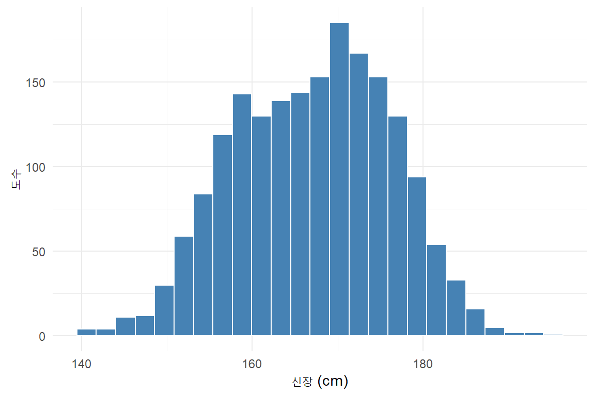
Figure 4.8: 신장 히스토그램 (bins = 25)
두 히스토그램을 비교하면 흥미로운 차이가 보입니다.
- 몸무게 의 분포는 오른쪽으로 길게 늘어진(오른쪽으로 치우친, right-skewed) 모양입니다.
- 신장 의 분포는 중심을 기준으로 좌우가 거의 대칭(symmetric) 에 가깝습니다.
자료의 대표성: 여기서 다루는 자료는 우리나라 전체 인구를 대표하는 자료가 아닙니다. 체력인증센터를 직접 방문한 사람들 의 측정 결과이므로, 방문자들이 특정한 경향(예: 건강에 관심이 많은 사람)을 지닌다면 이 분포는 전체 인구의 분포와 다를 수 있습니다. 데이터를 분석할 때는 자료가 전체 집단을 잘 대표하는지, 아니면 특정 집단에 치우쳐 있는지 를 항상 확인해야 합니다.
4.2.2 상자그림
상자그림(box plot) 은 자료의 중앙값, 사분위수, 이상치를 한눈에 보여 주는 시각화입니다. 몸무게의 분포가 큰 방향으로 치우쳐 있다는 사실을 상자그림에서 더 분명하게 확인할 수 있습니다.
ggplot(physical, aes(y = ITEM_F002)) +
geom_boxplot(fill = "steelblue", alpha = 0.5) +
labs(y = "몸무게 (kg)") +
theme_minimal() +
theme(axis.text.x = element_blank())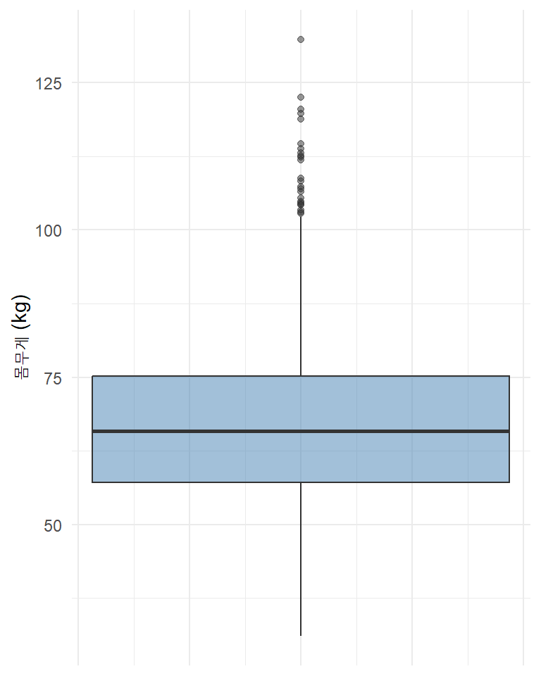
Figure 4.9: 몸무게 상자그림
몸무게와 신장의 상자그림을 나란히 그려 비교하려면, 데이터를 긴 형태(long format) 로 바꾸어 한 번에 그리는 것이 R다운 방법입니다. base R의 boxplot() 을 쓰면 여러 변수를 바로 비교할 수도 있습니다.
# base R 방식: 두 변수를 나란히
boxplot(physical$ITEM_F001, physical$ITEM_F002,
names = c("신장(cm)", "몸무게(kg)"),
col = c("skyblue", "steelblue"),
main = "신장 vs 몸무게")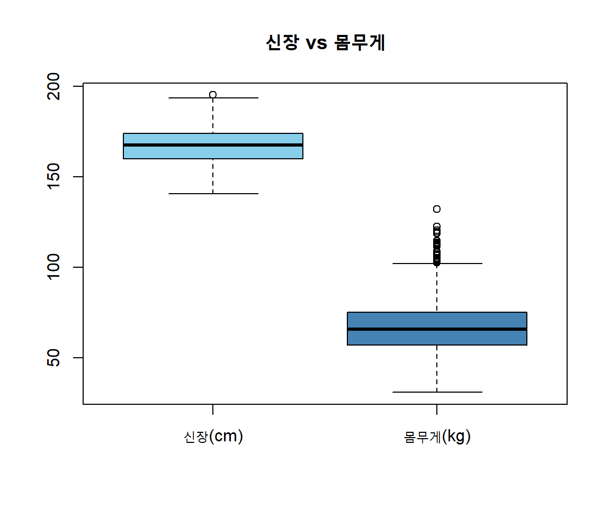
Figure 4.10: 신장과 몸무게 상자그림 비교
두 변수를 나란히 비교하면, 신장(ITEM_F001)은 중앙을 기준으로 거의 대칭적인 분포를 보이는 반면, 몸무게(ITEM_F002)는 위쪽(큰 값)으로 이상치가 많은 비대칭 분포임을 알 수 있습니다.
4.2.3 산점도
두 연속형 변수의 값을 2차원 평면에 동시에 나타낸 그림을 산점도(scatter plot) 라고 하며, 두 변수의 관련성(상관관계)을 직관적으로 파악할 수 있습니다. 신장과 몸무게의 관계를 산점도로 그려 봅니다.
ggplot(physical, aes(x = ITEM_F001, y = ITEM_F002)) +
geom_point(alpha = 0.4, color = "steelblue") +
labs(x = "신장 (cm)", y = "몸무게 (kg)") +
theme_minimal()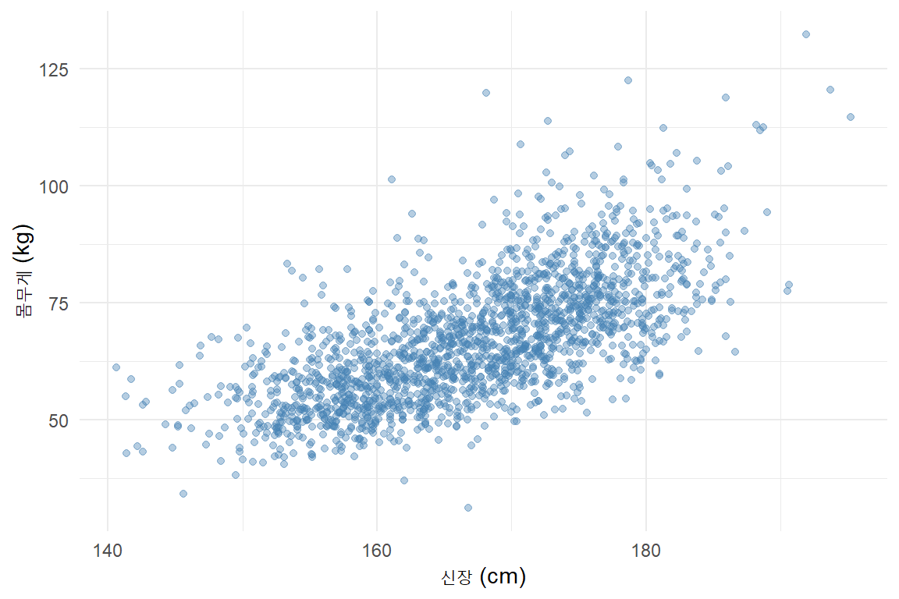
Figure 4.11: 신장 vs 몸무게 산점도
성별에 따라 색을 다르게 하여 산점도를 그리면 집단 간 차이를 볼 수 있습니다 R의 ggplot2 에서는 color = 성별 을 aes() 안에 지정하기만 하면 됩니다.
ggplot(physical, aes(x = ITEM_F001, y = ITEM_F002, color = TEST_GEN)) +
geom_point(alpha = 0.5) +
labs(x = "신장 (cm)", y = "몸무게 (kg)", color = "성별") +
theme_minimal()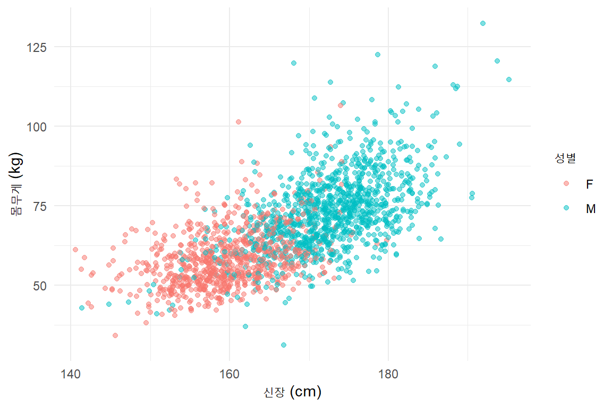
Figure 4.12: 성별로 구분한 신장 vs 몸무게 산점도
제목과 축 이름 바꾸기
그래프는 단순히 그림만 그리는 것이 아니라, 무엇을 보여주는지 분명히 알려주는 것이 중요합니다. Python에서는 plt.title(), plt.xlabel(), plt.ylabel() 을 썼지만, ggplot2 에서는 labs() 함수 하나로 제목과 축 이름을 모두 지정합니다.
ggplot(physical, aes(x = ITEM_F001, y = ITEM_F002, color = TEST_GEN)) +
geom_point(alpha = 0.5) +
labs(title = "신장과 몸무게의 상관관계",
x = "신장",
y = "몸무게",
color = "성별") +
theme_minimal(base_size = 13) # base_size 로 글자 크기 조절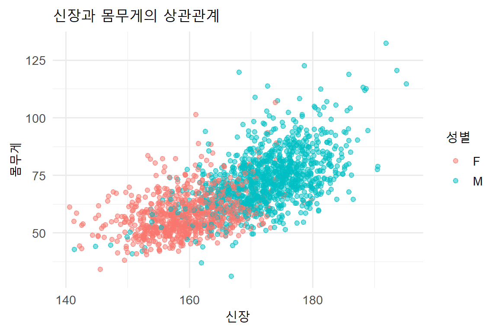
Figure 4.13: 신장과 몸무게의 상관관계
4.2.4 참고: 그룹별 분포
앞서 배운 fill/color 미학(aesthetic)을 이용하면, 그룹별로 분포를 나누어 비교하는 그림을 쉽게 그릴 수 있습니다.
성별로 몸무게의 분포를 겹쳐 그린 히스토그램입니다.
ggplot(physical, aes(x = ITEM_F002, fill = TEST_GEN)) +
geom_histogram(bins = 40, alpha = 0.5, position = "identity") +
labs(x = "몸무게 (kg)", y = "도수", fill = "성별") +
theme_minimal()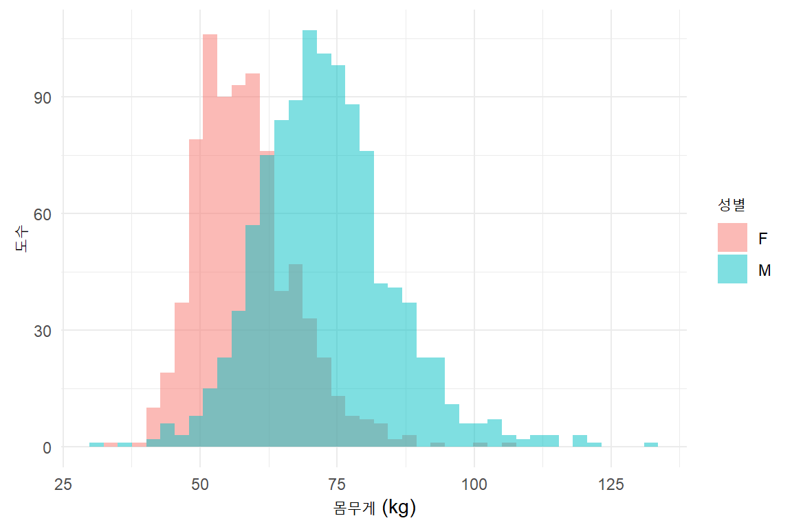
Figure 4.14: 성별 몸무게 분포 비교
성별로 몸무게의 분포를 비교하는 상자그림입니.
ggplot(physical, aes(x = TEST_GEN, y = ITEM_F002, fill = TEST_GEN)) +
geom_boxplot(alpha = 0.6) +
labs(x = "성별", y = "몸무게 (kg)") +
theme_minimal() +
theme(legend.position = "none")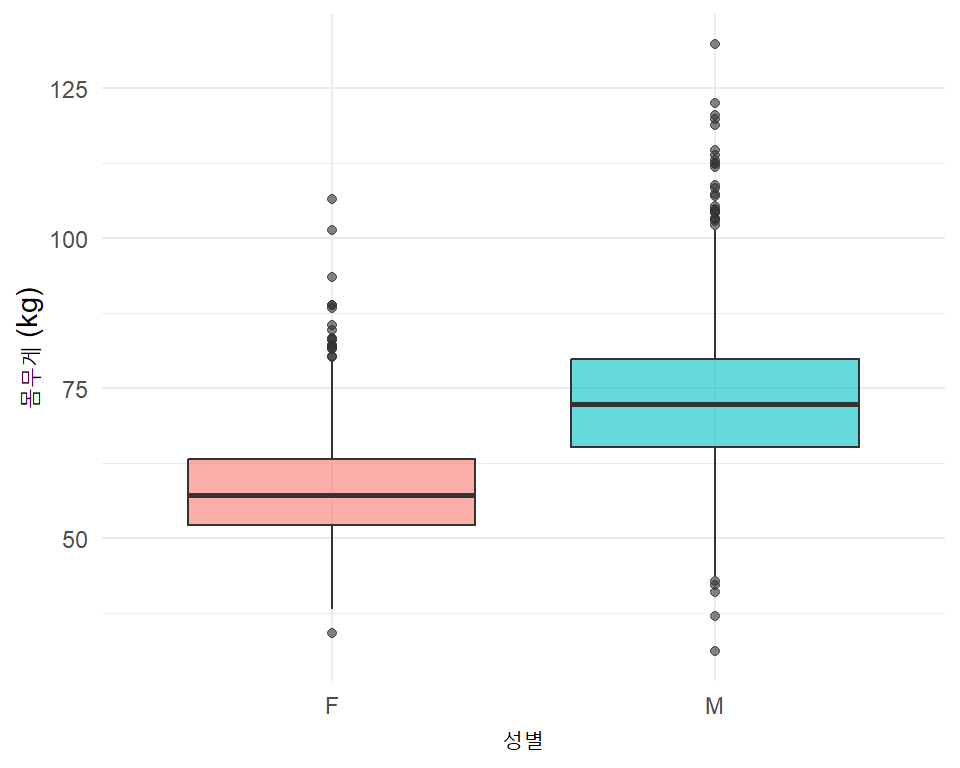
Figure 4.15: 성별 몸무게 상자그림
4.3 분포와 우연성
분포(distribution) 란 데이터를 구성하는 관측값들이 어디에 집중되어 있고 어떻게 퍼져 있는지를 보여주는 개념입니다. 분포를 통해 자료의 특성을 쉽게 파악할 수 있습니다.
- 평균(mean) 과 중앙값(median) 은 자료의 중심 에 대한 정보를 줍니다.
- 표준편차(standard deviation) 와 IQR 은 자료가 얼마나 퍼져 있는지 를 알려줍니다.
이처럼 데이터를 대표하여 하나의 숫자로 요약해 주는 값을 통계량(statistic) 이라고 합니다. 하지만 데이터의 특성은 중심과 퍼짐만이 아닙니다. 분포의 전체적인 모양이 대칭인지, 오른쪽으로 길게 늘어졌는지(skewed) 같은 특성도 중요한 단서가 됩니다.
R에서 여러 통계량을 한 번에 확인하려면 base R의 summary() 를 사용합니다.
## Min. 1st Qu. Median Mean 3rd Qu. Max.
## 140.6 160.0 167.7 167.1 173.9 195.24.3.1 성인 남자의 신장
정규분포(normal distribution) 는 자연에서 매우 흔하게 나타나는 분포입니다. 키, 몸무게, 측정 오차처럼 수많은 작은 요인이 독립적으로 합쳐져 만들어지는 결과는 정규분포에 가까운 형태를 보이는 경향이 있습니다. 정규분포를 따르는 자료는 중심을 기준으로 좌우가 대칭을 이루며, 중심에서 멀어질수록 빈도가 빠르게 줄어드는 종 모양(bell shape) 을 보입니다.
먼저 남자들의 신장 분포를 히스토그램으로 그려 봅니다.
male <- physical %>% filter(TEST_GEN == "M")
ggplot(male, aes(x = ITEM_F001)) +
geom_histogram(bins = 20, fill = "steelblue", color = "white") +
labs(x = "신장 (cm)", y = "도수") +
theme_minimal()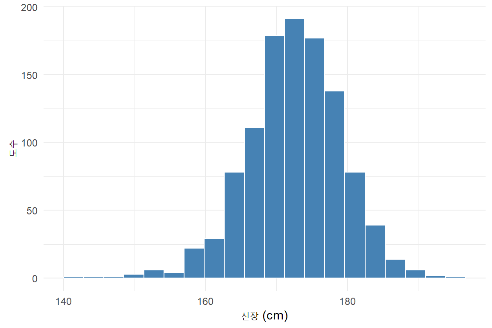
Figure 4.16: 남자 전체의 신장 분포
남자 전체의 신장 분포를 보면 대체로 좌우 대칭처럼 보이지만 왼쪽 꼬리가 더 길게 늘어져 있습니다. 그 이유는 아이들의 신장이 아직 성장 중이기 때문입니다. 어린이와 청소년의 키는 성인과 달리 최종적으로 고정된 값이 아니므로, 시간이 지남에 따라 계속 변하게 됩니다.
이제 관심 대상을 성인 남자(만 19세 이상) 로 한정해 봅니다. 데이터를 분석할 때는 항상 관심 있는 집단의 범위와 조건을 합리적으로 설정하는 것이 중요합니다.
adult_man <- physical %>%
filter(TEST_GEN == "M", TEST_AGE >= 19) %>%
transmute(height = ITEM_F001,
weight = ITEM_F002)
ggplot(adult_man, aes(x = height)) +
geom_histogram(bins = 20, fill = "steelblue", color = "white") +
labs(x = "신장 (cm)", y = "도수") +
theme_minimal()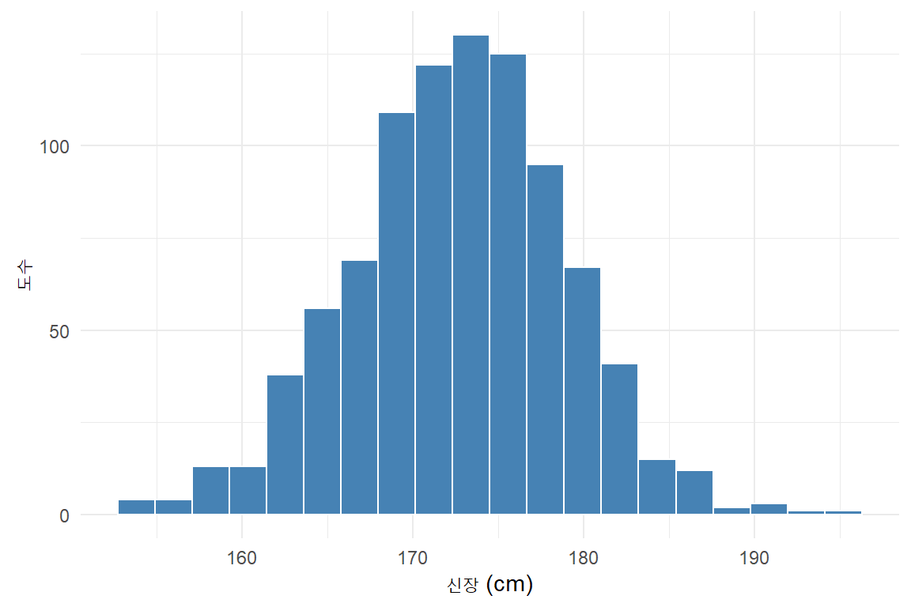
Figure 4.17: 성인 남자의 신장 분포
성인만 선택하니 분포가 거의 좌우 대칭을 이루며, 양쪽 꼬리 부분도 빠르게 줄어드는 것을 볼 수 있습니다. 이는 정규분포의 전형적인 형태와 매우 유사합니다.
이제 성인 남성 신장의 평균 과 표준편차 를 구합니다. \(n\)명의 데이터를 \(x_1, x_2, \dots, x_n\) 이라 하면,
\[ \bar{x} = \frac{1}{n}\sum_{i=1}^{n} x_i, \qquad s = \sqrt{\frac{1}{n-1}\sum_{i=1}^{n}(x_i - \bar{x})^2} \]
m_height <- mean(adult_man$height)
s_height <- sd(adult_man$height)
c(mean = m_height, sd = s_height)## mean sd
## 172.695435 6.2467164.3.2 정규분포: 확률밀도함수
이제 앞에서 구한 평균과 표준편차를 가진 정규분포 곡선 위에, 실제 데이터인 성인 남자의 키 히스토그램을 겹쳐 그려 봅니다. 이렇게 하면 실제 자료의 분포가 정규분포와 얼마나 비슷한지 직관적으로 확인할 수 있습니다.
R에서 정규분포의 확률밀도함수는 dnorm(x, mean, sd) 로 계산합니다 (Python scipy.stats.norm.pdf 에 대응). ggplot2 에서는 stat_function() 으로 곡선을 겹쳐 그립니다.
ggplot(adult_man, aes(x = height)) +
geom_histogram(aes(y = after_stat(density)),
bins = 25, fill = "steelblue", color = "white") +
stat_function(fun = dnorm,
args = list(mean = m_height, sd = s_height),
color = "red", linewidth = 1) +
labs(x = "신장 (cm)", y = "밀도(density)",
title = "Physical data vs Normal distribution") +
theme_minimal()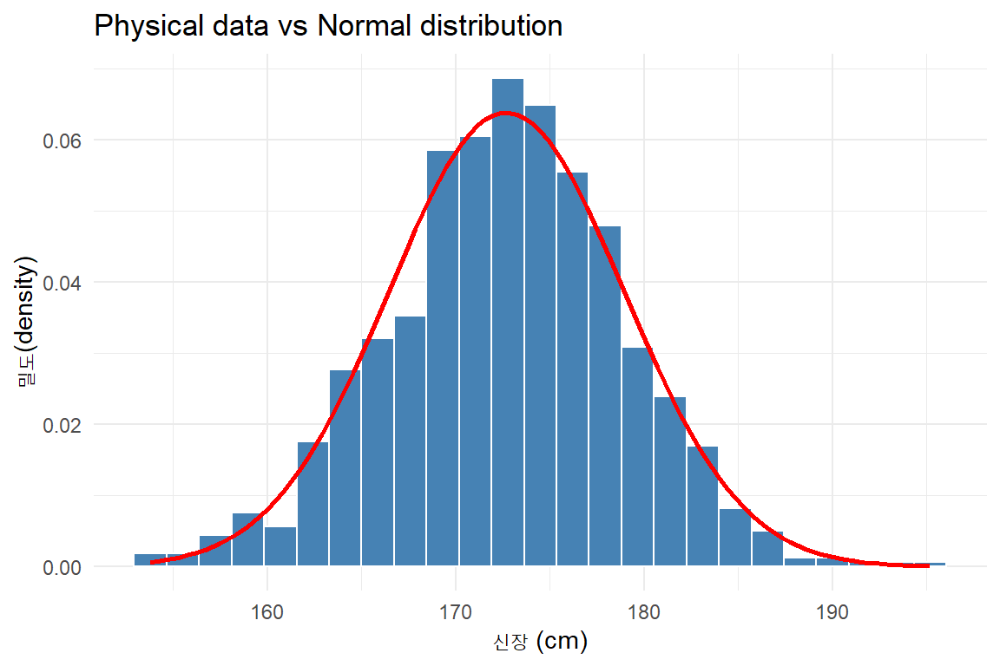
Figure 4.18: 성인 남자 키 히스토그램과 정규분포 곡선
겹쳐 그린 결과, 실제 성인 남자의 키 분포는 정규분포 곡선과 매우 유사한 모습을 보입니다. 그 이유는 사람의 키가 정규분포를 따른다고 알려져 있기 때문입니다.
정규분포의 식은 확률밀도함수(probability density function, PDF) 라고 하며, 나타날 수 있는 값들의 상대적인 가능성을 그래프의 높이로 표현해 줍니다. 정규분포 \(N(\mu, \sigma^2)\) 에서는 가장 가능성이 높은 값이 평균 \(\mu\) 이며, 평균에서 멀어질수록 가능성은 빠르게 줄어듭니다.
y = after_stat(density) 는 히스토그램의 세로축을 도수가 아닌 밀도 로 바꾸어, 정규분포 곡선과 축을 맞춰 주는 설정입니다 (pandas의 density = True 에 대응).
몸무게에 대해서도 같은 작업을 해 봅니다.
m_weight <- mean(adult_man$weight)
s_weight <- sd(adult_man$weight)
ggplot(adult_man, aes(x = weight)) +
geom_histogram(aes(y = after_stat(density)),
bins = 25, fill = "steelblue", color = "white") +
stat_function(fun = dnorm,
args = list(mean = m_weight, sd = s_weight),
color = "red", linewidth = 1) +
labs(x = "몸무게 (kg)", y = "밀도(density)") +
theme_minimal()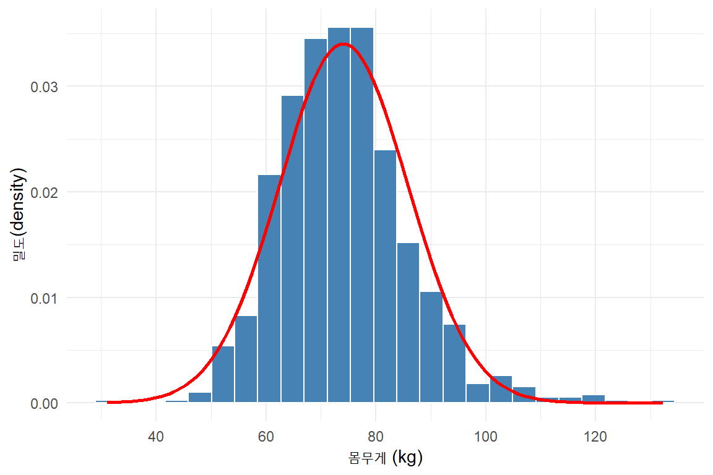
Figure 4.19: 성인 남자 몸무게 히스토그램과 정규분포 곡선
4.3.3 이상점
앞에서 성인 남자의 키 분포가 정규분포와 매우 유사함을 확인했습니다. 그렇다면 성인 남자의 체질량지수(BMI) 는 어떨까요? BMI는 다음과 같이 정의됩니다.
\[ \text{BMI} = \frac{\text{몸무게(kg)}}{\left(\text{신장(m)}\right)^2} = \frac{\text{weight}}{(\text{height}/100)^2} \]
mutate() 로 BMI 열을 새로 만든 뒤 히스토그램과 정규분포를 겹쳐 그립니다.
adult_man <- adult_man |>
mutate(bmi = weight / (height / 100)^2)
m_bmi <- mean(adult_man$bmi)
s_bmi <- sd(adult_man$bmi)
ggplot(adult_man, aes(x = bmi)) +
geom_histogram(aes(y = after_stat(density)),
bins = 40, fill = "steelblue", color = "white") +
stat_function(fun = dnorm,
args = list(mean = m_bmi, sd = s_bmi),
color = "red", linewidth = 1) +
labs(x = "BMI", y = "밀도(density)") +
theme_minimal()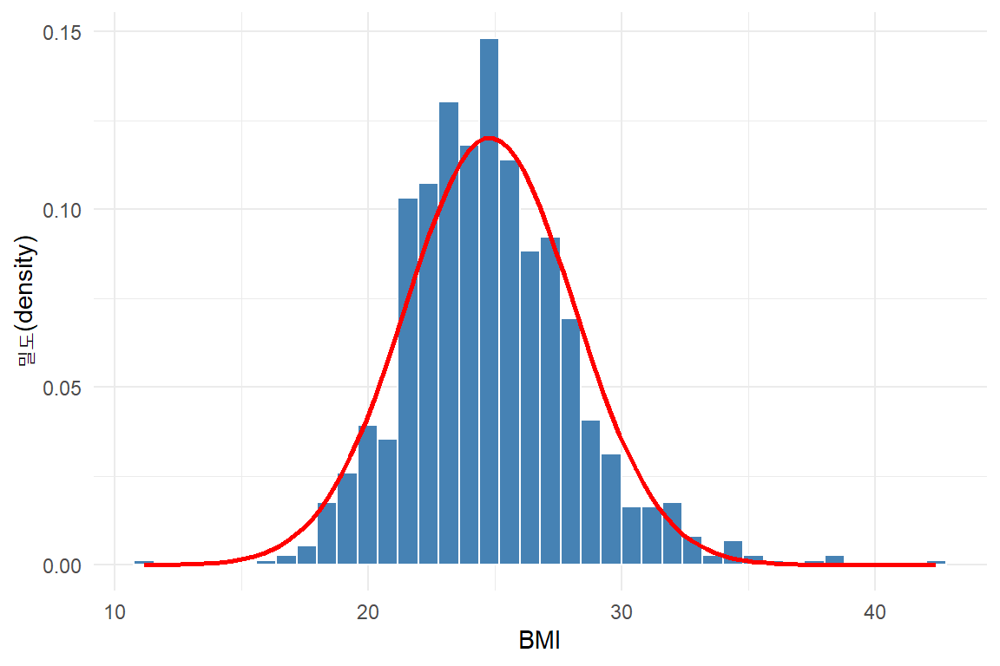
Figure 4.20: 성인 남자 BMI 분포
BMI의 최댓값을 확인해 봅니다.
## [1] 42.39566BMI의 최댓값이 비현실적으로 큰 값으로 나타납니다. 이렇게 자료의 전반적인 패턴에서 크게 벗어난 값을 이상점(outlier) 이라고 합니다. 이상점은 측정 오류이거나 특수한 경우일 수 있으므로, 분석 전에 원인을 확인하고 처리 방침을 정해야 합니다.
이상점을 확인하고 제거한 뒤 다시 그려 봅니다. 여기서는 상식적인 범위(BMI 10~50)만 남깁니다.
adult_man_clean <- adult_man |> filter(bmi >= 10, bmi <= 50)
m_bmi2 <- mean(adult_man_clean$bmi)
s_bmi2 <- sd(adult_man_clean$bmi)
ggplot(adult_man_clean, aes(x = bmi)) +
geom_histogram(aes(y = after_stat(density)),
bins = 30, fill = "steelblue", color = "white") +
stat_function(fun = dnorm,
args = list(mean = m_bmi2, sd = s_bmi2),
color = "red", linewidth = 1) +
labs(x = "BMI", y = "밀도(density)") +
theme_minimal()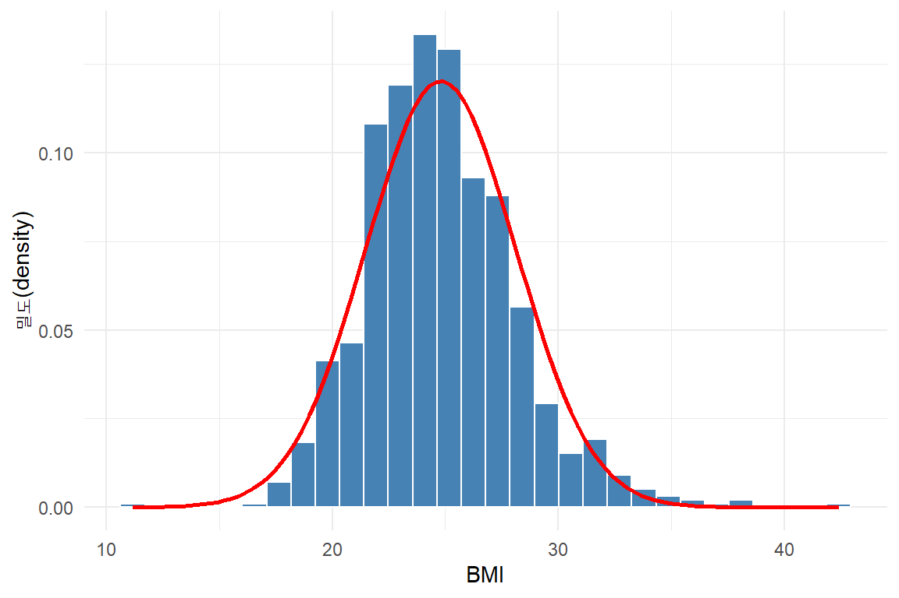
Figure 4.21: 이상점 제거 후 BMI 분포
4.4 확률
분포는 확률(probability) 과 깊이 연결되어 있습니다. 이번 절에서는 확률의 기초 개념을 주사위 예제로 살펴본 뒤, 이를 실제 데이터와 정규분포에 적용해 봅니다.
4.4.1 주사위와 표본공간
공정한 주사위를 던지면 1부터 6까지의 눈이 나옵니다. 이때 가능한 모든 결과의 집합 \(\{1, 2, 3, 4, 5, 6\}\) 을 표본공간(sample space, \(\Omega\)) 이라고 합니다. 각 눈이 나올 확률은 모두 \(1/6\) 로 동일합니다.
dice <- data.frame(value = 1:6, prob = rep(1/6, 6))
ggplot(dice, aes(x = factor(value), y = prob)) +
geom_col(aes(fill = value >= 5)) +
scale_fill_manual(values = c("FALSE" = "steelblue", "TRUE" = "red"),
guide = "none") +
labs(x = "주사위 눈", y = "확률(Probability)") +
theme_minimal()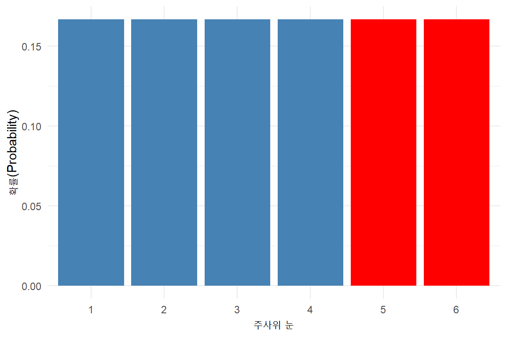
Figure 4.22: 공정한 주사위의 확률분포
4.4.2 확률의 기초 규칙
확률을 계산하는 데 꼭 필요한 두 가지 기초 규칙이 있습니다.
규칙 1. 표본공간의 확률은 1이다. 가능한 모든 사건이 일어날 확률의 합은 항상 1입니다.
\[ P(\Omega) = 1 \]
규칙 2. 여사건의 확률 은 주어진 사건의 확률을 1에서 빼면 됩니다.
\[ P(S^c) = 1 - P(S) \]
예를 들어 주사위 눈이 “4 이하”일 사건은 “5 이상”일 사건의 여사건입니다.
\[ P(4\ \text{이하}) = 1 - P(5\ \text{이상}) = 1 - \frac{2}{6} = \frac{4}{6} \]
4.4.3 상대도수와 확률
이제 확률을 실제 데이터에 적용해 봅니다. “성인 남자 한 명을 임의로 선택했을 때, 그의 키가 180cm 이상일 확률” 은 얼마일까요?
체력측정 데이터에 포함된 모든 성인 남자가 선택될 가능성이 동일하다고 가정하면, 이는 주사위와 같은 논리적 확률 계산과 동일합니다. 즉, 180cm 이상인 사람의 수 를 전체 사람의 수 로 나누면 됩니다.
\[ P(\text{키} > 180) = \frac{\text{키가 180 이상인 성인 남자의 수}}{\text{모든 성인 남자의 수}} \]
R에서는 논리 조건의 평균이 곧 비율이 됩니다 (TRUE=1, FALSE=0).
n_total <- nrow(adult_man_clean)
n_tall <- sum(adult_man_clean$height >= 180)
c(전체 = n_total, `180이상` = n_tall,
확률 = mean(adult_man_clean$height >= 180))## 전체 180이상 확률
## 920.0000000 106.0000000 0.1152174이렇게 전체 자료를 1로 두었을 때 각 구간이 차지하는 비율 을 상대도수(relative frequency) 라고 합니다.
\[ \text{상대도수} = \frac{\text{도수}}{\text{전체 자료의 수}} \]
히스토그램에서 상대도수(밀도)를 나타내려면 y = after_stat(density) 를 사용합니다. 아래 그림은 키가 180cm 이상인 구간을 빨간색 으로 강조한 것입니다.
ggplot(adult_man_clean, aes(x = height, fill = height >= 180)) +
geom_histogram(aes(y = after_stat(density)),
bins = 25, color = "white") +
scale_fill_manual(values = c("FALSE" = "steelblue", "TRUE" = "red"),
guide = "none") +
labs(x = "신장 (cm)", y = "상대도수(density)") +
theme_minimal()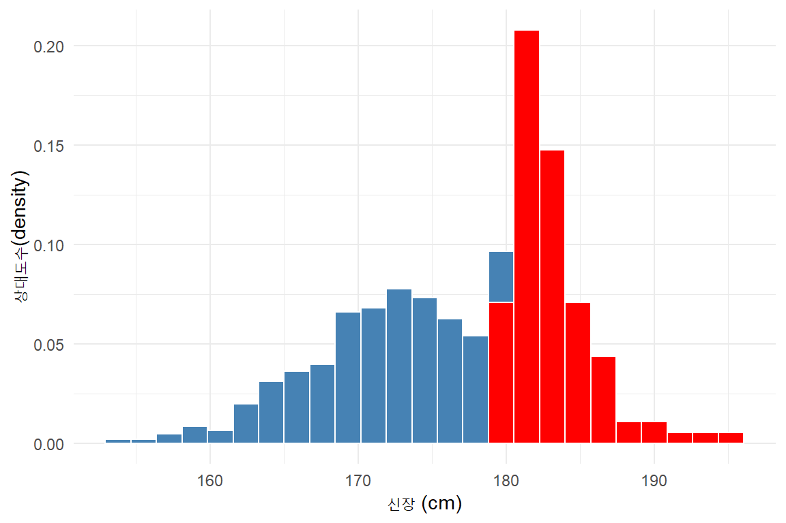
Figure 4.23: 키 180cm 이상 구간을 강조한 히스토그램
이 빨간 영역이 히스토그램 전체 면적에서 차지하는 비율이 곧 앞에서 구한 확률입니다.
4.4.4 정규분포에서의 확률
앞서 성인 남자의 키가 정규분포 \(N(172.7, 6.25^2)\) 에 가깝다는 것을 확인했습니다. 이제 실제 데이터의 개수를 세는 대신, 정규분포의 확률밀도함수 아래 면적 으로 확률을 계산해 봅니다.
R에는 정규분포를 다루는 함수가 base에 내장되어 있습니다 (Python scipy.stats.norm 에 대응).
dnorm(x, mean, sd): 확률밀도함수 값 (norm.pdf)pnorm(q, mean, sd): 누적분포함수, \(P(X \le q)\) (norm.cdf)qnorm(p, mean, sd): 분위수 (norm.ppf)rnorm(n, mean, sd): 난수 생성 (norm.rvs)
키가 180cm 이상일 확률 \(P(X \ge 180)\) 은 여사건 규칙 을 이용하여 다음과 같이 계산합니다.
\[ P(X \ge 180) = 1 - P(X \le 180) \]
## [1] 0.1214034이 값이 앞에서 실제 데이터로 구한 상대도수(약 0.12)와 거의 일치함을 확인할 수 있습니다. 정규분포라는 수학적 모형 이 실제 데이터를 잘 근사하는 것입니다.
정규분포 곡선에서 180 이상인 구간의 면적을 시각화해 봅니다. ggplot2 에서 특정 구간을 채울 때는 geom_area() 에 xlim 을 지정합니다.
ggplot(data.frame(x = c(150, 195)), aes(x = x)) +
stat_function(fun = dnorm, args = list(mean = mu, sd = sigma),
color = "blue", linewidth = 1) +
stat_function(fun = dnorm, args = list(mean = mu, sd = sigma),
geom = "area", xlim = c(180, 195),
fill = "red", alpha = 0.6) +
labs(x = "신장 (cm)", y = "밀도(density)") +
theme_minimal()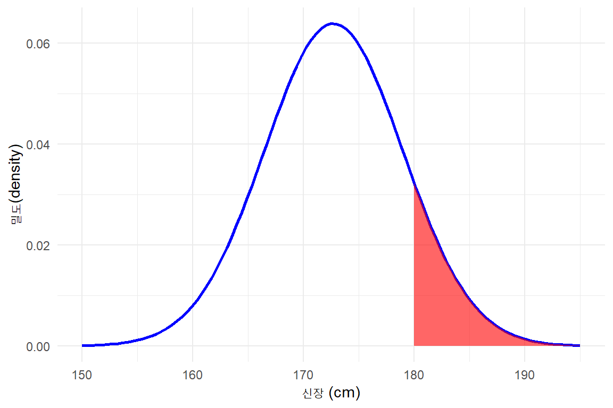
Figure 4.24: 정규분포에서 키 180cm 이상 구간의 면적
빨간색으로 칠해진 면적이 바로 \(P(X \ge 180) \approx 0.12\) 입니다. 이처럼 정규분포에서는 확률 = 곡선 아래 면적(적분) 으로 계산됩니다.
\[ P(X \ge 180) = \int_{180}^{\infty} f(x;\mu,\sigma)\, dx \]